25+ Christmas Breakfast Recipes for a Cozy Holiday Morning
📌 Save to Pinterest
Christmas morning deserves a breakfast that feels like a gift: something warm from the oven, something sweet, and something you can make ahead so nobody is stuck at the stove while the stockings are opened. This roundup gathers twenty-five Christmas breakfast recipes — overnight casseroles, spiced pancakes, cinnamon rolls, muffins and lighter plates — all made for a cozy holiday morning. Make one showpiece the night before, add a quick batch of pancakes in the morning, and the table takes care of itself.
How to plan a cozy Christmas breakfast
Pick a mix, not a single style: one make-ahead bake, one griddle recipe, and one lighter plate cover every taste. If the morning is busy, lean on overnight recipes — casseroles, French toast bakes and oats that wait in the fridge until you need them. If you are feeding a crowd, choose bakes that serve from one dish, like a breakfast casserole or a cinnamon roll wreath, and let everyone help themselves. And if you want the house to smell like Christmas before anyone wakes up, start with cinnamon, ginger and maple.
Good to know: Everything is written in American English, and measurements use US customary units — cups, tablespoons, and Fahrenheit — for cooks in the United States. Always follow safe food-handling guidance, and check labels for allergens when cooking for others.
Food safety: cook the breakfast casserole to 165°F (74°C) in the center, ground sausage to 160°F (71°C), and egg dishes such as quiche to 160°F (71°C). Check with a food thermometer.
Casseroles, pancakes & scones
These are the recipes that do the work while you sleep — assemble them the night before, bake in the morning, and serve straight from the dish.
1. Overnight Cinnamon Roll Casserole
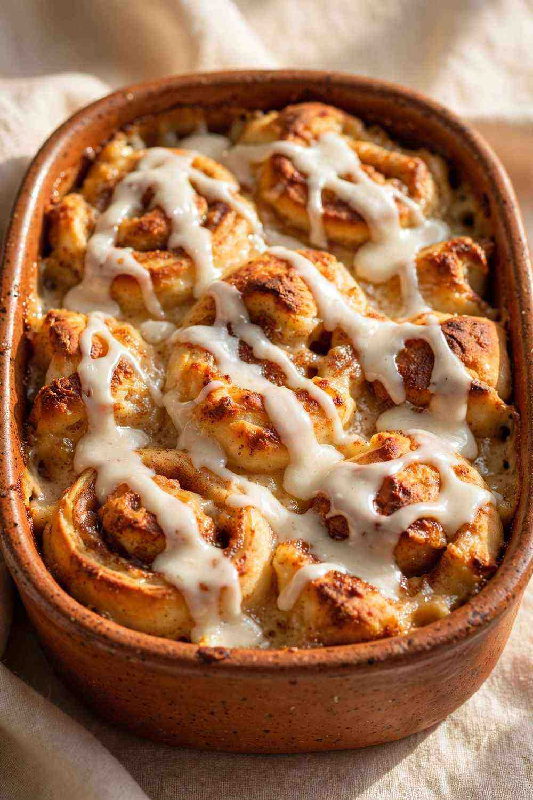
Soft cinnamon rolls baked overnight in a custard.
Ingredients
- 2 cans refrigerated cinnamon rolls
- 4 eggs
- 1/2 cup milk
- 1 tsp vanilla
- 1/2 tsp cinnamon
- 1/4 cup maple syrup
Directions
- Cut rolls into quarters and place in a greased baking dish.
- Whisk eggs, milk, vanilla and cinnamon; pour over rolls.
- Cover and refrigerate overnight.
- Bake at 350°F for 30 minutes, then drizzle with the icing.
2. Gingerbread Pancakes with Maple Butter
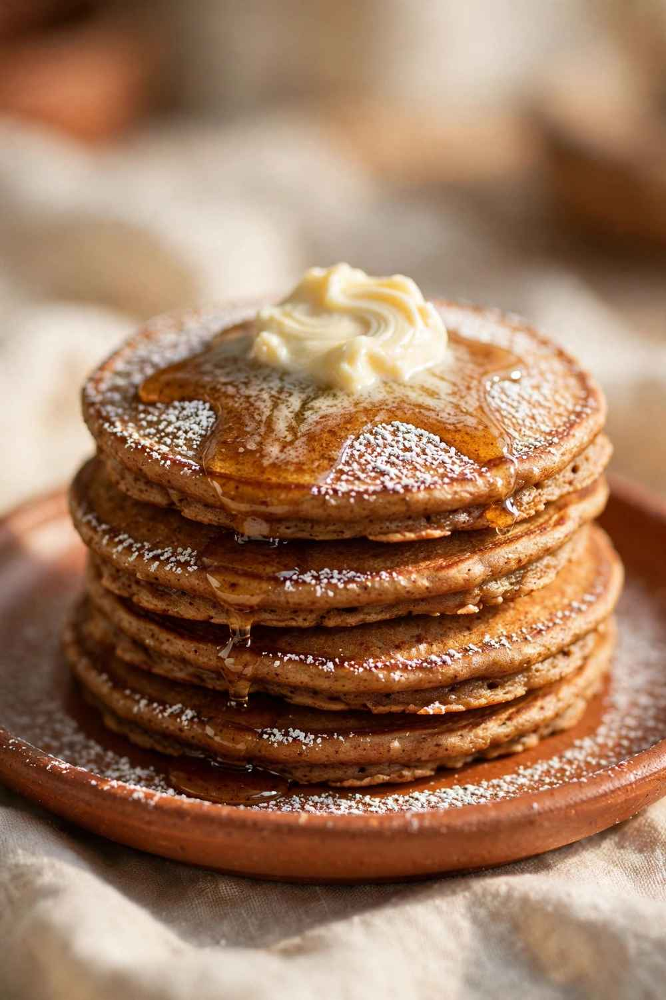
Warmly spiced pancakes for Christmas morning.
Ingredients
- 2 cups flour
- 2 tsp baking powder
- 1 tsp ginger
- 1 tsp cinnamon
- 1/4 tsp cloves
- 2 eggs
- 1 1/2 cups milk
- 2 tbsp molasses
Directions
- Whisk dry and wet ingredients separately, then combine.
- Cook 1/4-cup scoops on a buttered griddle until bubbles form, then flip.
- Serve with maple butter and powdered sugar.
3. Cranberry Orange Scones

Buttery scones studded with cranberries.
Ingredients
- 2 cups flour
- 1/3 cup sugar
- 1 tbsp baking powder
- 1/2 cup cold butter
- 1 cup fresh cranberries
- zest of 1 orange
- 2/3 cup cream
Directions
- Cut butter into the flour mixture until crumbly.
- Stir in cranberries, zest and cream to form a dough.
- Pat into a round, cut into 8 wedges and bake at 400°F for 18 minutes.
4. Eggnog French Toast
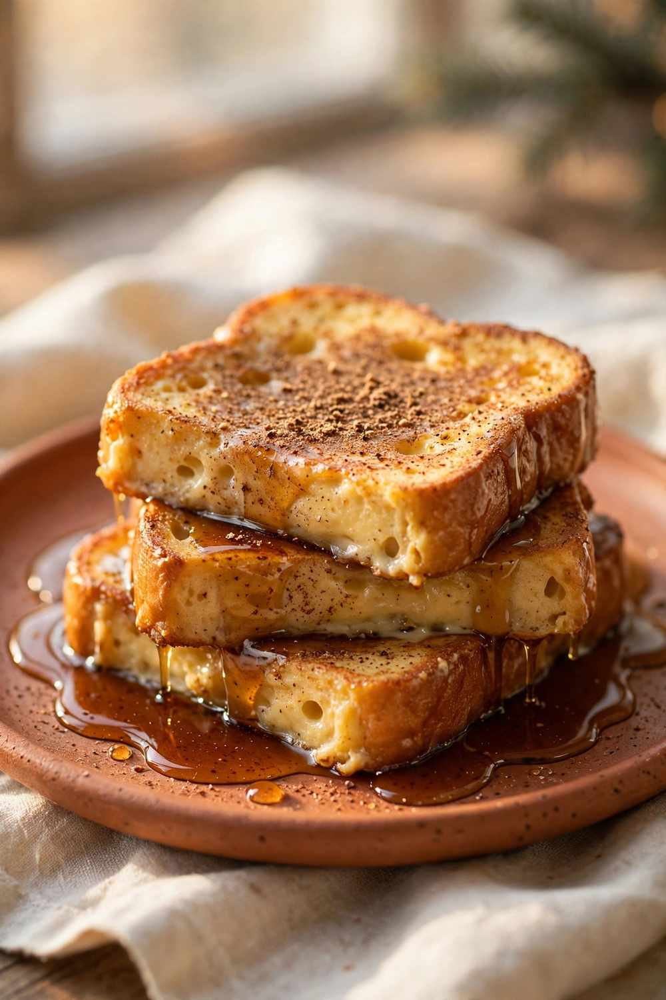
Thick slices soaked in eggnog custard.
Ingredients
- 8 thick slices brioche
- 1 cup eggnog
- 2 eggs
- 1 tsp vanilla
- 1/2 tsp nutmeg
- butter for frying
Directions
- Whisk eggnog, eggs, vanilla and nutmeg.
- Dip each slice until soaked but not falling apart.
- Fry in butter until golden on both sides and serve with maple syrup.
5. Christmas Morning Breakfast Casserole
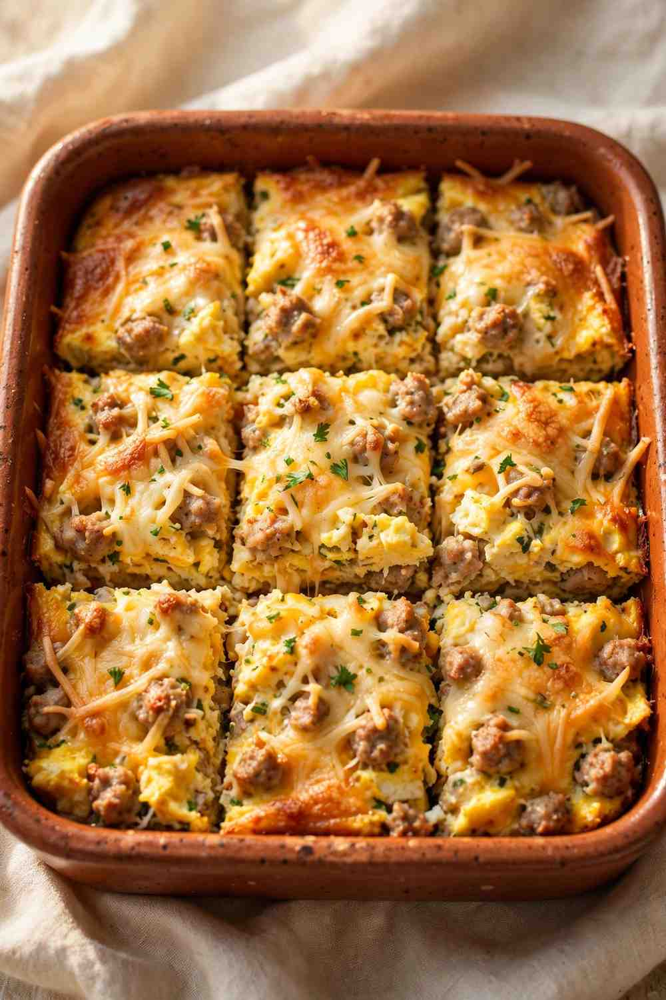
Sausage, eggs and cheese baked in one dish.
Ingredients
- 1 lb breakfast sausage
- 8 eggs
- 2 cups milk
- 6 cups cubed bread
- 2 cups shredded cheddar
- 1/2 tsp mustard powder
Directions
- Brown the sausage and drain.
- Whisk eggs, milk and mustard; stir in bread, sausage and cheese.
- Pour into a greased dish and bake at 350°F for 45 minutes until set.
Food safety: cook the casserole to 165°F (74°C) in the center — check with a food thermometer.
Pancakes, donuts & muffins
Sweet, golden and made for a slow morning — pancakes, donuts and muffins, with a savory bagel board for balance.
6. Peppermint Hot Chocolate Pancakes
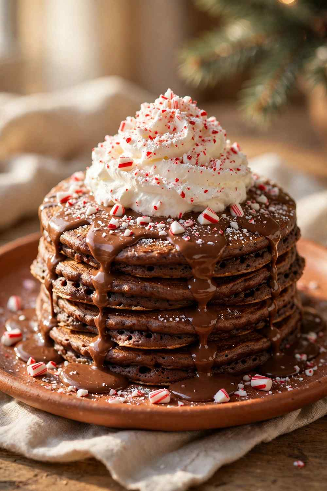
Chocolate pancakes with a peppermint twist.
Ingredients
- 1 1/2 cups flour
- 1/4 cup cocoa powder
- 2 tsp baking powder
- 2 eggs
- 1 1/4 cups milk
- 1/2 tsp peppermint extract
- crushed candy canes
Directions
- Whisk all ingredients into a smooth batter.
- Cook small pancakes on a griddle until set.
- Top with whipped cream and crushed candy canes.
7. Baked Apple Cider Donuts

Soft donuts with a cinnamon-sugar coat.
Ingredients
- 1 1/2 cups flour
- 1 tsp baking powder
- 1/2 cup apple cider
- 1 egg
- 1/3 cup sugar
- 1 tsp cinnamon
- 1/4 cup melted butter
Directions
- Mix the batter and spoon into a greased donut pan.
- Bake at 350°F for 12 minutes.
- Brush with butter and roll in cinnamon sugar.
8. Smoked Salmon and Cream Cheese Bagels
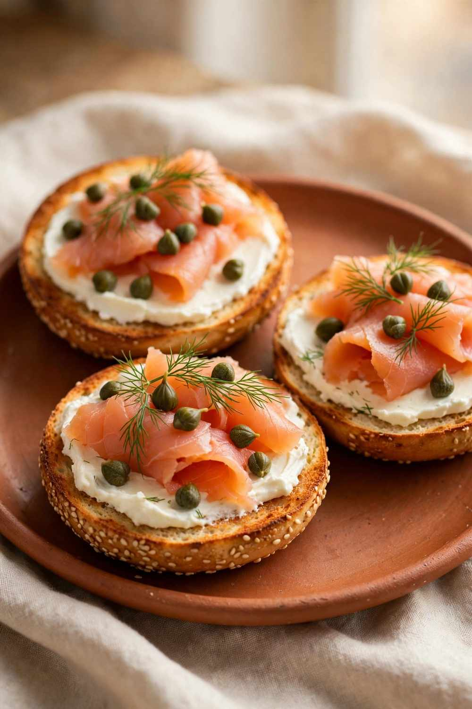
A festive, no-cook breakfast board.
Ingredients
- 4 bagels
- 8 oz cream cheese
- 8 oz smoked salmon
- 1 red onion
- capers
- dill
- lemon wedges
Directions
- Toast the bagels and spread with cream cheese.
- Layer smoked salmon on top.
- Finish with onion, capers, dill and a squeeze of lemon.
9. Pecan Praline French Toast Bake
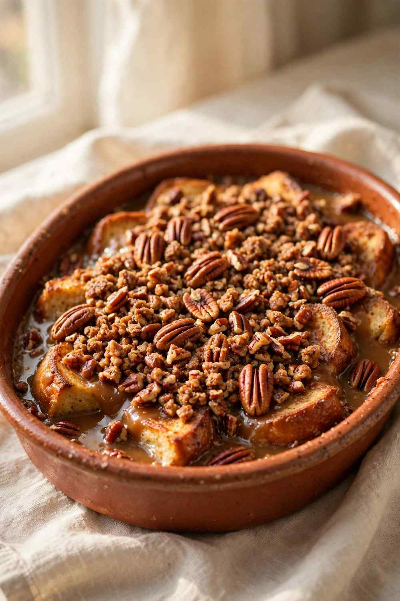
A make-ahead bake with a crunchy praline top.
Ingredients
- 8 cups cubed brioche
- 6 eggs
- 2 cups milk
- 1 cup chopped pecans
- 1/2 cup brown sugar
- 1/4 cup butter
- 1 tsp cinnamon
Directions
- Layer bread in a greased dish and pour the egg mixture over.
- Top with pecans, brown sugar and butter.
- Refrigerate overnight, then bake at 350°F for 45 minutes.
10. Cranberry White Chocolate Muffins

Tender muffins with tart berries.
Ingredients
- 2 cups flour
- 1/2 cup sugar
- 2 tsp baking powder
- 1 egg
- 1 cup milk
- 1/3 cup oil
- 1 cup cranberries
- 1/2 cup white chocolate chips
Directions
- Mix dry and wet ingredients separately, then stir together gently.
- Fold in cranberries and chocolate chips.
- Bake at 375°F for 20 minutes.

Eggs, oats & savory bakes
For mornings when you want something hearty but not heavy — eggs, oats and savory bakes that hold up on a buffet table.
11. Spinach and Feta Egg Muffins
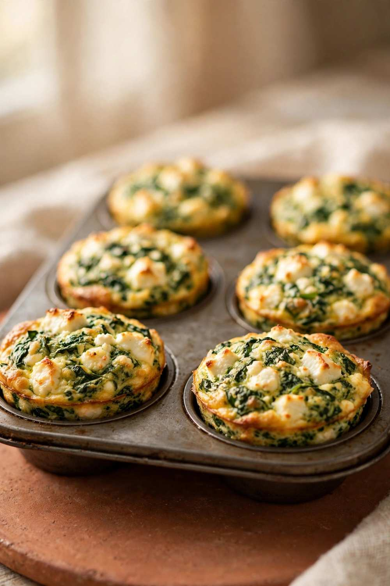
Grab-and-go egg cups.
Ingredients
- 10 eggs
- 1 cup chopped spinach
- 1/2 cup crumbled feta
- 1/4 cup milk
- salt and pepper
Directions
- Whisk eggs with milk, salt and pepper.
- Stir in spinach and feta.
- Divide among a greased muffin tin and bake at 350°F for 18 minutes.
12. Cinnamon Apple Overnight Oats

Creamy oats ready in the morning.
Ingredients
- 2 cups rolled oats
- 2 cups milk
- 1 cup diced apple
- 1 tsp cinnamon
- 2 tbsp maple syrup
- 1/4 cup chopped walnuts
Directions
- Stir oats, milk, apple, cinnamon and maple syrup together.
- Divide into jars and refrigerate overnight.
- Top with walnuts before serving.
13. Holiday Hash Browns Casserole
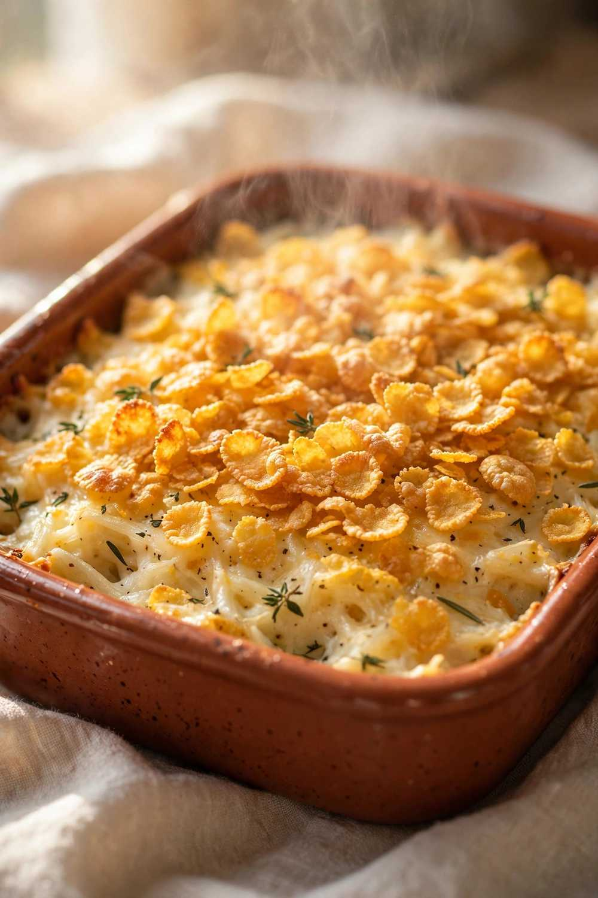
Crispy, cheesy potato bake.
Ingredients
- 1 bag (30 oz) frozen hash browns
- 2 cups shredded cheddar
- 1 cup sour cream
- 1 can cream of chicken soup
- 1/2 cup melted butter
- 1 cup crushed cornflakes
Directions
- Mix hash browns, cheese, sour cream, soup and butter.
- Spread in a greased dish and top with cornflakes.
- Bake at 350°F for 45 minutes.
14. Orange Cranberry Coffee Cake

A bright, crumb-topped cake.
Ingredients
- 2 cups flour
- 1 cup sugar
- 1/2 cup butter
- 2 eggs
- 1 cup sour cream
- 1 cup cranberries
- zest of 1 orange
- 1/2 cup streusel topping
Directions
- Cream butter and sugar, then beat in eggs and sour cream.
- Fold in cranberries and zest.
- Pour into a greased pan, add streusel and bake at 350°F for 45 minutes.
15. Bacon and Cheese Quiche
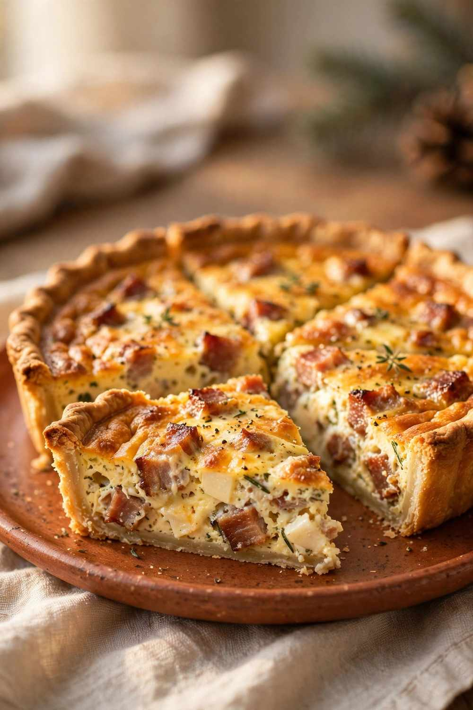
A sliceable, make-ahead quiche.
Ingredients
- 1 pie crust
- 6 eggs
- 1 1/2 cups milk
- 8 slices cooked bacon
- 1 1/2 cups shredded Swiss cheese
- 1/4 tsp nutmeg
Directions
- Line a pie dish with the crust.
- Whisk eggs, milk and nutmeg; stir in bacon and cheese.
- Pour in and bake at 375°F for 40 minutes until set.
Food safety: bake the quiche until it reaches 160°F (71°C) in the center.
Breads, waffles & biscuits
Warm breads and waffles for a slow morning — bake a loaf, fry some puffs, and let the waffle iron do the rest.
16. Chocolate Chip Banana Bread

Moist bread for a slow morning.
Ingredients
- 3 ripe bananas
- 1/3 cup melted butter
- 3/4 cup sugar
- 1 egg
- 1 tsp vanilla
- 1 1/2 cups flour
- 1 tsp baking soda
- 1/2 cup chocolate chips
Directions
- Mash bananas and stir in butter, sugar, egg and vanilla.
- Fold in flour, baking soda and chocolate chips.
- Bake in a loaf pan at 350°F for 55 minutes.
17. Cinnamon Sugar Breakfast Puffs

Soft puffs rolled in cinnamon sugar.
Ingredients
- 1 1/2 cups flour
- 1/2 cup sugar
- 1 1/2 tsp baking powder
- 1 egg
- 1/2 cup milk
- 1/3 cup melted butter
- cinnamon sugar for rolling
Directions
- Mix the batter and fill a greased muffin tin.
- Bake at 350°F for 18 minutes.
- Brush with butter and roll in cinnamon sugar.
18. Pear and Walnut Baked Oatmeal

Warm, nutty baked oatmeal.
Ingredients
- 2 cups rolled oats
- 2 cups milk
- 2 diced pears
- 1/2 cup chopped walnuts
- 1/4 cup maple syrup
- 1 tsp cinnamon
- 2 eggs
Directions
- Stir all ingredients together in a greased baking dish.
- Bake at 375°F for 35 minutes until set.
- Serve warm with extra maple syrup.
19. Red Velvet Waffles with Cream Cheese Drizzle

Festive red waffles.
Ingredients
- 2 cups flour
- 1/4 cup cocoa powder
- 2 tsp baking powder
- 2 eggs
- 1 1/2 cups milk
- 1 tbsp red food coloring
- 4 oz cream cheese
- 1/4 cup powdered sugar
Directions
- Whisk the waffle batter and cook in a waffle iron until crisp.
- Whisk cream cheese with powdered sugar and a little milk.
- Drizzle over the waffles.
20. Sausage Gravy and Biscuits
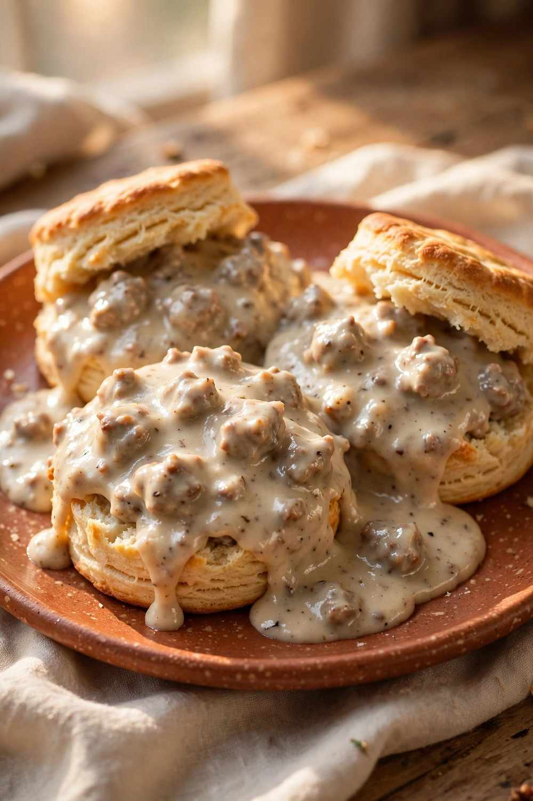
Southern-style comfort breakfast.
Ingredients
- 8 canned biscuits
- 1 lb pork sausage
- 1/4 cup flour
- 2 1/2 cups milk
- salt and black pepper
Directions
- Bake the biscuits as directed.
- Brown the sausage, stir in flour, then slowly add milk.
- Simmer until thick and spoon over split biscuits.
Food safety: cook the pork sausage to 160°F (71°C) — check with a food thermometer.
Toasts, treats & overnight oats
The finishing touches — quick toasts, dippable sticks and a pull-apart wreath, plus overnight oats for the lightest eaters.
21. Cranberry Brie Toast
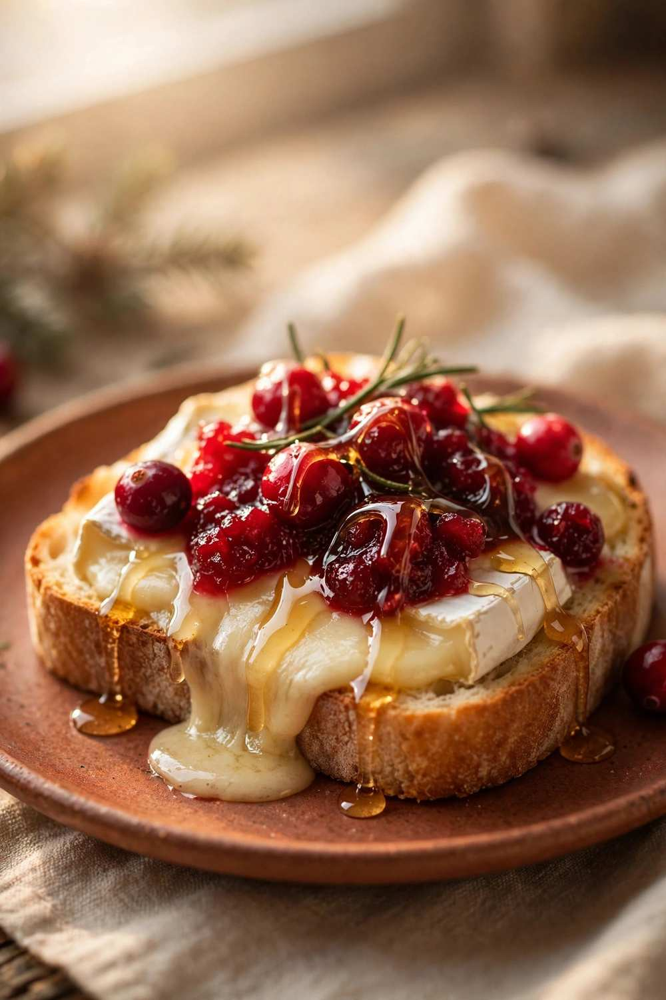
Sweet-tart toast with melted brie.
Ingredients
- 4 slices sourdough
- 8 oz brie
- 1/2 cup cranberry sauce
- 2 tbsp honey
- fresh thyme
Directions
- Toast the bread and layer brie on top.
- Spoon cranberry sauce over and broil briefly until the brie melts.
- Drizzle with honey and thyme.
22. Pumpkin Spice French Toast Sticks

Dippable sticks with warm spice.
Ingredients
- 8 slices Texas toast
- 3 eggs
- 1/2 cup milk
- 1/2 cup pumpkin puree
- 1 tsp pumpkin spice
- butter for frying
Directions
- Cut toast into sticks.
- Whisk eggs, milk, pumpkin and spice.
- Dip sticks, fry in butter until golden, and serve with maple syrup.
23. Avocado Toast with Poached Egg

A lighter Christmas-morning plate.
Ingredients
- 4 slices sourdough
- 2 ripe avocados
- 4 eggs
- red pepper flakes
- lemon juice
- salt
Directions
- Toast the bread and mash avocado with lemon and salt.
- Poach the eggs in simmering water for 3 minutes.
- Top the toast with avocado and a poached egg.
24. Cinnamon Roll Wreath
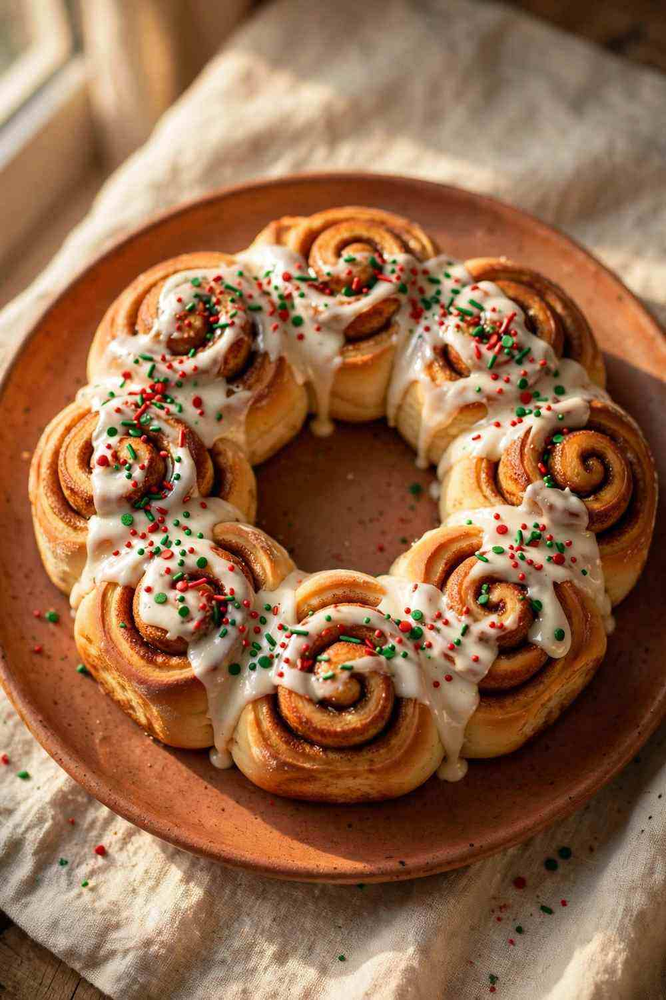
A pull-apart wreath for the table.
Ingredients
- 2 cans refrigerated cinnamon rolls
- 1/2 cup chopped pecans
- 1/4 cup brown sugar
- icing from the cans
- red and green sprinkles
Directions
- Arrange rolls in a ring on a lined baking sheet.
- Sprinkle with pecans and brown sugar.
- Bake at 350°F for 25 minutes, then drizzle with icing and sprinkles.
25. Hot Cocoa Overnight Oats
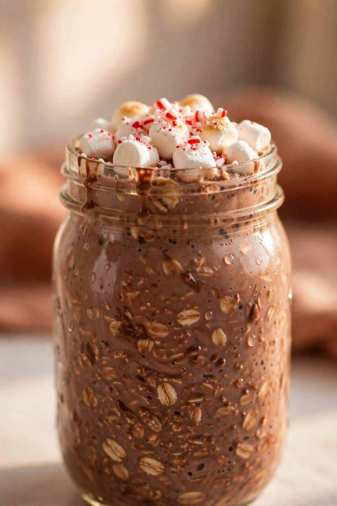
Chocolate oats with a holiday top.
Ingredients
- 2 cups rolled oats
- 2 cups milk
- 3 tbsp cocoa powder
- 2 tbsp maple syrup
- 1/2 cup mini marshmallows
- crushed candy cane
Directions
- Stir oats, milk, cocoa and maple syrup together.
- Refrigerate overnight in jars.
- Top with marshmallows and crushed candy cane.
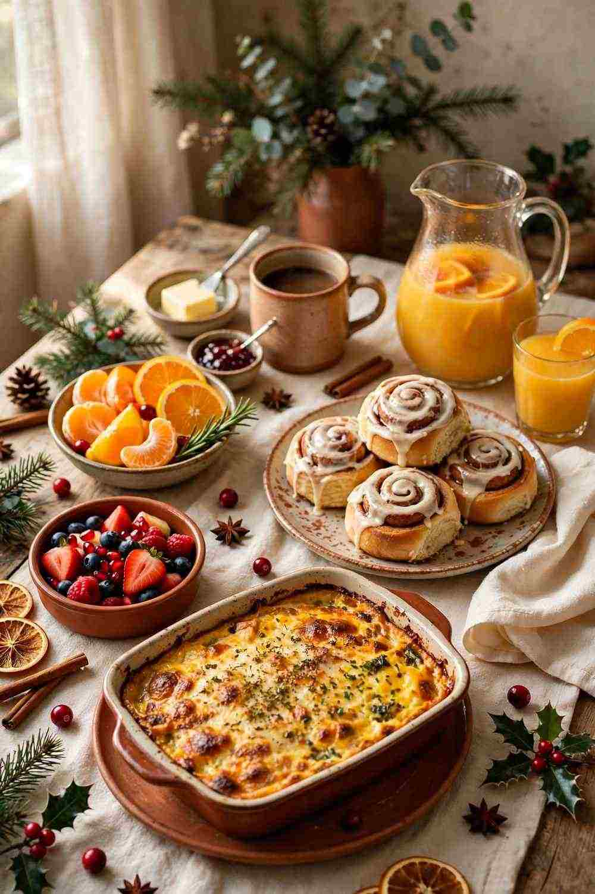
Make-ahead & serving tips
Assemble overnight recipes the evening before so Christmas morning starts with the oven, not the mixing bowl. Bake casseroles and bakes in the center of the oven and let them rest for 10 minutes before slicing so they hold together. Keep pancakes and waffles warm on a low oven rack while you cook the next batch, and set out toppings — maple syrup, powdered sugar, berries and butter — so everyone builds their own plate. Most of these recipes keep well: store leftovers covered in the fridge for up to 3 days, and reheat gently in the oven or microwave.
Related articles
More roundups from the same table:
- 25+ Christmas Side Dishes for Your Holiday Table — roasted vegetables, creamy potatoes, stuffing and cranberry sauce.
- 20+ Christmas Air Fryer Recipes for Easy Holiday Cooking — crispy appetizers, roasted vegetables and festive desserts.
- 30+ Christmas Cookie Recipes Everyone Will Love — classic, chocolate, spiced, filled and decorated cookies.
- 35+ Easy Christmas Appetizers for a Crowd — dips, bites, cheese boards and warm starters for your holiday party.
Keep exploring
- Browse the Breakfast & Brunch roundups — slow mornings and weekend brunch tables.
- Browse all six categories — breakfast, lunch and dinner, desserts, air fryer, healthy recipes, and appetizers.
- More about the kitchen — what The Tasty Recipe Co is and how it works.
About The Tasty Recipe Co: Learn how we research, organize and review our food collections — see our About Us and Editorial Policy pages.
Recipe results can vary with ingredients, equipment, and technique. See our Disclaimer for food-safety and allergy notes.